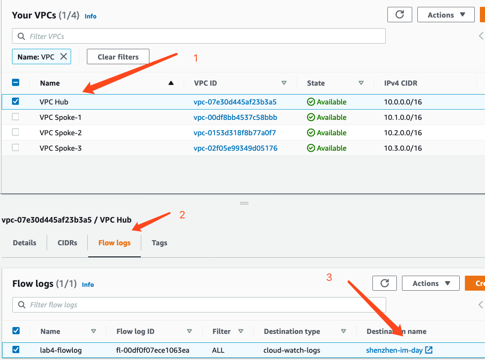

01-设置VPC Flow Logs
请确保操作的区域是 AWS新加坡区域（ap-southeast-1）。
创建 Log Group
首先我们需要创建一个 CloudWatch Log Group，来存储我们在这一节中需要记录的Log日志信息。
-
控制台导航到“CloudWatch”，选择 Log -> Log groups，点击右上方的 “Create log group”
-
输入Log group name 为shenzhen-im-day，点击 Create 按钮
创建VPC Flow Logs
在本章节中，您将为VPC Hub创建流日志。
- 控制台导航到“VPC” – “Your VPCs”
- 选择“VPC Hub”, 单击“Flow Logs” 选项，然后单击 “Create flow log”
- 将 过滤器 “Filter” 改为 “All”
- 将 最大聚合间隔 “Maximum aggregation interval” 设置为1分钟 “1 minute”
- 将 目标日志组 “Destination log group” 设置为 “shenzhen-im-day”
- 单击 设置权限 “Set Up Permissions” 以创建新的IAM角色
- “Role Name” 保持默认
- 单击 允许 “Allow” 然后导航回到 创建流日志”Create flow log” 界面
- 单击IAM角色旁边的刷新按钮，然后选择您刚创建的IAM角色
- 单击 创建 “Create”
生成测试流量
现在，在CloudWatch中收集了往返于VPC Hub中网络接口的IP流量。现在我们需要在VPC Hub中的EC2实例生成一些流量，例如使用网络工具iperf在Hub中的实例“hub-sub-1a” 和Spoke1中的实例 “spoke1-sub-1a” 之间生成流量。
首先，您需要更新Spoke1中Amazon EC2实例的安全组，以允许iperf服务器接收传入流量。
- 导航到EC2控制台，在左边的菜单中选择 “EC2” – “Instances”
- 选择EC2实例 “spoke1-sub-1a”
- 单击下部窗格中的“安全组”以查看和编辑其规则
- 单击 编辑入站规则 “Edit inbound rules”
- 添加规则以允许来自VPC Hub中Amazon EC2实例的TCP端口5201。添加子网CIDR
10.0.0.0/24
- 单击 保存规则 ” Save rules” 在Spoke1中的EC2实例“spoke1-sub-1a”上执行以下操作
- 通过SSH进入VPC B中的EC2实例
ssh -i lab3.pem ec2-user@<PUBLIC IP>
- 安装iperf
sudo yum install iperf3 -y
- 启动iperf服务器
iperf3 -s
在VPC Hub中的EC2实例 “hub-sub-1a” 上执行以下操作
- 通过SSH进入VPC A中的EC2实例 “EC2 VPC A – AZ1”
ssh -i lab3.pem ec2-user@<PUBLIC IP>
- 安装iperf
sudo yum install iperf3 -y
- 设置2 个数据流并发、持续传输30秒的TCP连接到Spoke1中的EC2实例“spoke-sub-1a”（请使用私有IP）
iperf3 -c <PRIVATE IP OF SPOKE1 INSTANCE 10.1.0.X> -P 2 -t 30
如下所示
在CloudWatch中查看VPC Flow Logs流日志
VPC Flow logs可以发送到Amazon S3存储桶或CloudWatch。在前面的章节中，我们配置了从VPC Hub发送到CloudWatch的流日志。我们现在可以导航到CloudWatch查看日志。 
- 在“Flow Logs”选项卡下，单击目标“ shenzhen-im-day”以导航到CloudWatch
发布到 CloudWatch 时，流日志数据将发布到日志组，并且每个网络接口在日志组中具有唯一的日志流。日志流包含流日志记录。您可以在同一个日志组里创建多个流日志。 - 单击网络接口（ENI）日志流以查看该接口的流日志记录 流日志的剖析：
- 可选：要查看列表中每个ENI附加到的Amazon EC2实例，请导航至“ EC2” –“ Network Interfaces”
- 选择一个ENI，然后单击 实例ID “Instance id”
查询流日志以获取见解
CloudWatch Logs Insights使您能够交互式搜索和分析CloudWatch Logs中的日志数据，包括VPC流日志。您可以执行查询以帮助您更有效地响应日常运维问题。在本章节中，您将运行一个查询，显示字节数传输最多的前10个连接。
- 导航到“CloudWatch” – “Insights”
- 单击 选择日志组 “Select log group(s)” ，选择“shenzhen-im-day”
- 单击 简单查询 “Simple queries” – “VPC flow log queries” （VPC流日志查询）– “Top 10 byte transfers by source and destination IP addresses” （按源IP地址和目标IP地址传输的前10个字节）
- 单击 运行查询 “Run query”
- 查看查询结果
在这个结果内，我们可以看到在这个 VPC 内传输数据量最大的源/目标 IP地址，并且进行了从大到小的排序。